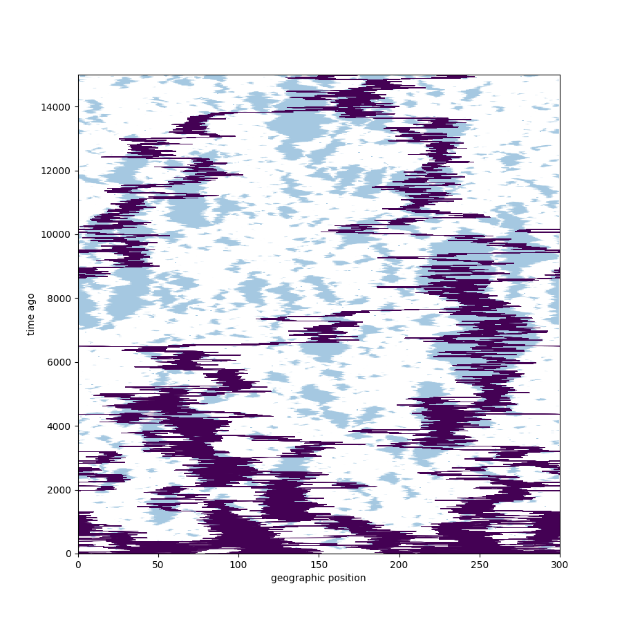
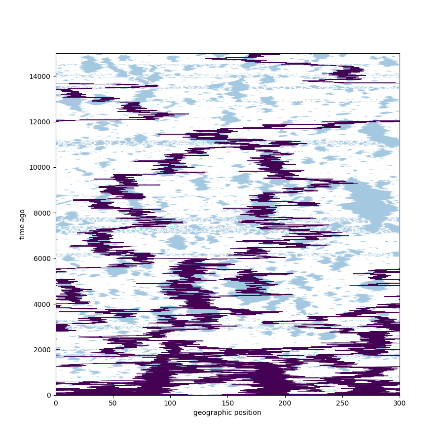
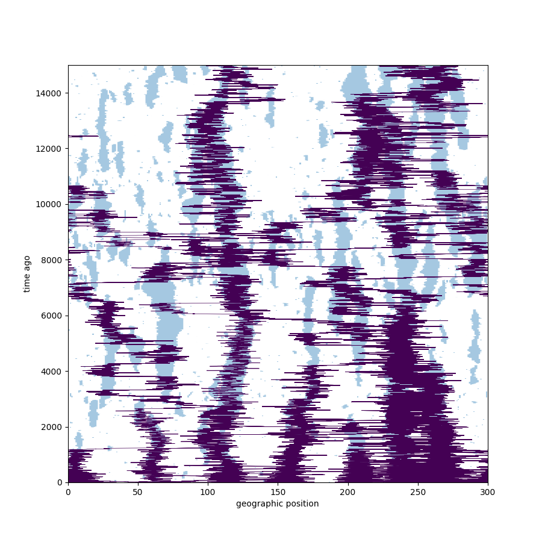
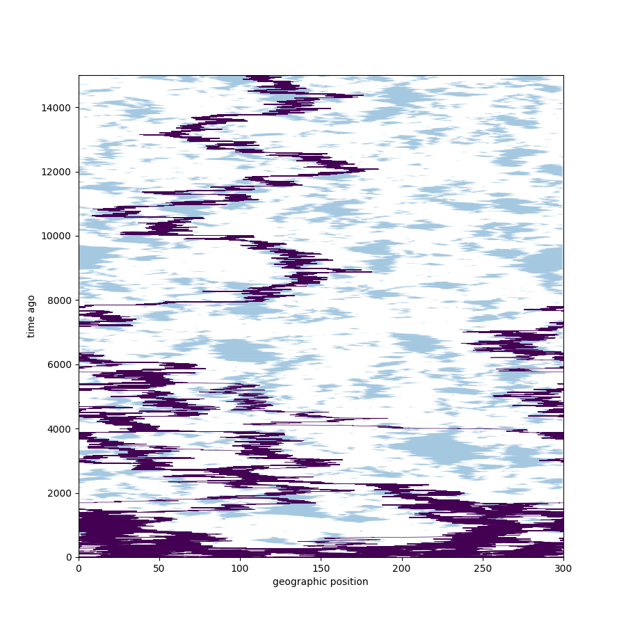

Where did your ancestors live? Tracing lineages across space.
Peter Ralph
15 July 2020
What’s a lineage?
The lineage of a particular gene is the path \[ t \mapsto L(t), \] where \(L(t)\) is
- the ancestor from time \(t\) ago that the gene was inherited from, or maybe
- the location of that ancestor in space.
Suppose in a population of annual plants, at time \(t\) ago
- there are \(N_x(t)\) individuals at location \(x\),
- that each produce \(\lambda(x)\) seeds (and die),
- and each seed moves to \(y\) with probability \(m_{xy}\),
- surviving with probability \(s(y)\).
Then \[\begin{aligned} N_y(t-1) = \sum_x N_x(t) \lambda(x) m_{xy} s(y) , \end{aligned}\]
and if \(L(t) = y\) then \[\begin{aligned} \P\{L(t+1) = x\} = \frac{ N_x(t+1) \lambda(x) m_{xy} } { \sum_z N_z(t+1) \lambda(z) m_{zy} } . \end{aligned}\]
Example:
Let \(N_x(t) = N\) for \(x \in \mathbb{Z}\), \(t \ge 0\) and \(m_{xy} = m(|y-x|)\) with \[\begin{aligned} \sum_x x m(x) &= 0 \\ \sum_x x^2 m(x) &= \sigma^2 . \end{aligned}\]
Then \(\E[L(t)^2] = t \sigma^2\), and \(L(t/\epsilon) / \sqrt{\epsilon}\) converges to a Brownian motion.
More general observations:
Times between lineage jumps are drawn from the generation time, i.e., the typical age of parent at time of birth of child.
Lineages move towards areas of greater offspring production.
Questions
What do lineages tell us?
Basic observation: “\(L(0) = y\) and \(L(t) = x\)” means that the genome at \(x\) was the parent of that at \(y\).
and so \[\begin{aligned} \P\{ L(t) = x \} &= \text{( proportion of genomes today at $y$ } \\ &\qquad \text{ descended from those that were at $x$ )} \end{aligned}\]
How fast do genes spread?
Suppose a mutation occurred \(t\) ago at \(x\). It’s density today is \[\begin{aligned} \propto \frac{\P^x\{ L(t) = y \}}{N(x)} \end{aligned}\]
In the example, \(\sim \sigma \sqrt{t}\).
Where’s the long-term fitness?
If \(L\) has stationary distribution \(\pi\) then \[\begin{aligned} \frac{\pi(x)}{N(x)} \propto \text{( mean fitness at $x$ )} . \end{aligned}\]
Thinking backwards
Effective dispersal
Question: What is \[\begin{aligned} \lim_{t \to \infty} \frac{\E[L(t)^2]}{ t } := \sigma^2_e \end{aligned}\]
In general, \[\begin{aligned} \sigma^2_e \neq \sigma^2 . \end{aligned}\]
Stable patches
Suppose there are two types of habitat: for \(x \in \mathbb{Z}\): \[\begin{aligned} x \text{ even } \longrightarrow \text{good, $N(x)$ big} \\ x \text{ odd } \longrightarrow \text{good, $N(x)$ small} . \end{aligned}\]
Most odd-distance migrants die, so \[ \sigma^2_e \approx \frac{ \sum_{x \ge 1} (2x)^2 m(2x) }{ \sum_{x \ge 1} m(2x) } < \sigma^2, \quad \text{ usually.} \]
Negative correlations
Now suppose the patches turn over, so \[\begin{aligned} t + x \text{ even } \longrightarrow \text{good, $N(x)$ big} \\ t + x \text{ odd } \longrightarrow \text{good, $N(x)$ small} . \end{aligned}\]
Most even-distance migrants die, so \[ \sigma^2_e \approx \frac{ \sum_{x \ge 1} (2x + 1)^2 m(2x + 1) }{ \sum_{x \ge 1} m(2x + 1) } > \sigma^2, \quad \text{ usually.} \]
Life in a big-small world
Consider a dynamic 1d landscape of “good patches” with stationary distribution \[\begin{aligned} \P\{N(x+1) = \text{big}|N(x) = \text{small}\} &= p_\text{good} \\ \P\{N(x+1) = \text{small}|N(x) = \text{big}\} &= p_\text{bad} , \end{aligned}\] where patches move in a reversible way by:
- jittering their edges,
- appearing in bad areas,
- and disappearing when small.
- (No merging/splitting, though.)





\(\sigma_e\) is determined by
- dispersal variance (\(\sigma^2\)),
- cluster movement (\(\gamma_m\)), and
- how long lineages are trapped in clusters (\(\gamma_b\)).
Questions
How will patch dynamics affect lineage movement, in particular, \(\sigma_e\)?
- \(\sigma_e\) should increase with patch jitter, \(\gamma_m\), and
- increase with patch birth/death, \(\gamma_b\).
Note: the landscape at each point in time has the same characteristics. How much will its temporal dyanmics change gene flow?
SLiMulation
Overview of the “experiment”
A population living in continuous space with local discrete-time dynamics:
Reproduction: everyone produces Poisson(\(f\)) offspring with a random mate chosen from a Gaussian(1) kernel (or, by selfing)
with \(f = 1.25\) in “bad” habitat and \(f=2.25\) in “good”.
Dispersal: Gaussian(6)
Establishment: with probability \[ \frac{1}{1 + C \times \text{( local density )}} \],
Mortality: constant probability \(1/4\) of death.
- Record locations of everyone alive ever,
- and how they inherited chromosomes from their parents
- in a tree sequence; parsed using tskit and pyslim.
Width 1,000 neighborhood, burn-in of 1,000 time steps, run for 5,000 time steps: \(\sim\) 5,000 individuals alive.
(see SLiM)
Computing \(\sigma^2_e\):
Extract the relatedness matrix: \[ P_{ij} = 1/2 \quad \text{if $i$ is a parent to $j$}, \] and \[\begin{aligned} x_i &= \text{( location of individual $i$ )} \\ t_i &= \text{( birth time ago of individual $i$ )} \end{aligned}\]
So: \[\begin{aligned} x^T P^n \delta_i \end{aligned}\] is the mean location of \(n^\text{th}\)-generation ancestors of individual \(i\).
Let \(L_n\) be the location of a random \(n\)th generation ancestor, and \(T_n\) be the time since their birth. Then if \(z_i = x_i^2 / t_i\), \[\begin{aligned} \E^i\left[\frac{(L_n - L_0)^2}{T_n - T_0}\right] = z^T P^n \delta_i . \end{aligned}\]